ПОРТФОЛИО / ДИЗАЙН
Графический
дизайн.
Визуальное оформление, мобильные интерфейсы
и печатные материалы. Работы в Figma.
Визуальное оформление
Corredores
Серия графических композиций: горизонтальные баннеры и квадратный визуал. Общая палитра, выразительная типографика и многослойная работа с изображениями.


Мобильный интерфейс
Cooking
Дизайн приложения с рецептами: стартовый экран, вход, главная страница, рецепт и сохранённые блюда. Светлый интерфейс с акцентом на фотографии и навигацию.

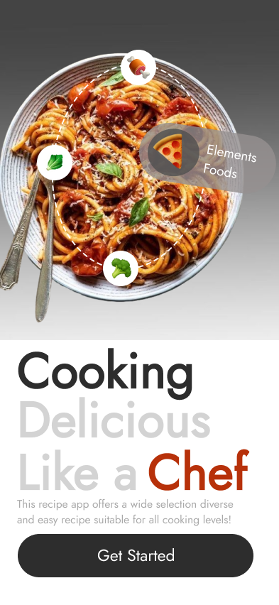
Рассмотреть +
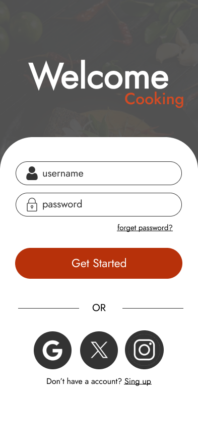
Рассмотреть +
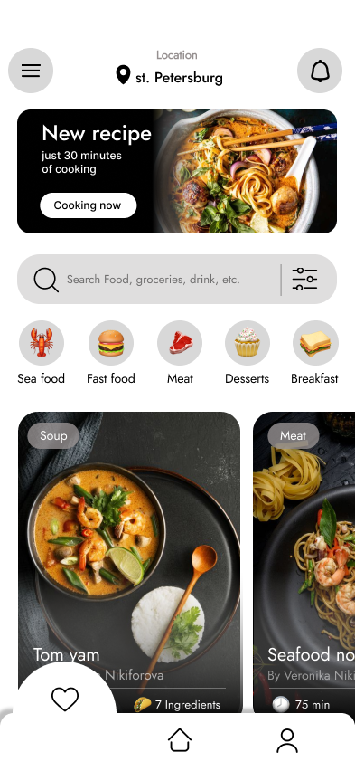
Рассмотреть +
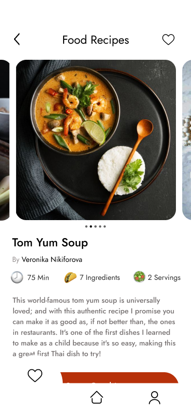
Рассмотреть +
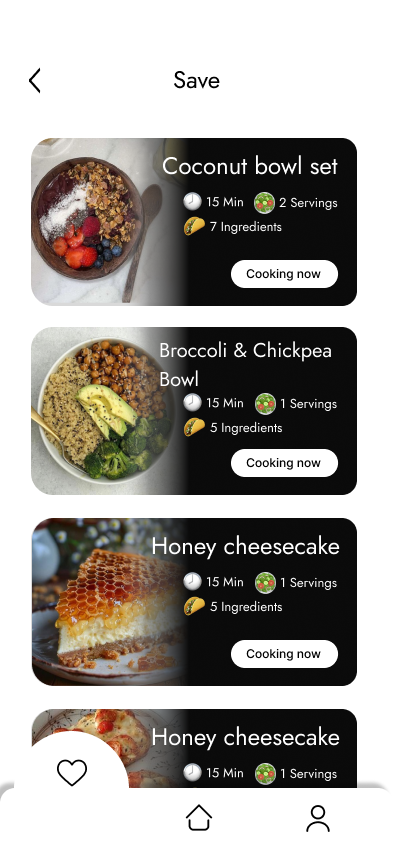
Рассмотреть +Мобильный интерфейс
Mustang
Дизайн автомобильного приложения. Экраны управления, отчётов, карты и климатических настроек в единой тёмной палитре с красным акцентом.

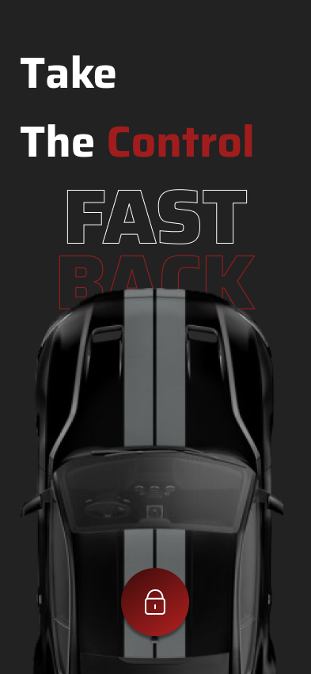
Рассмотреть +
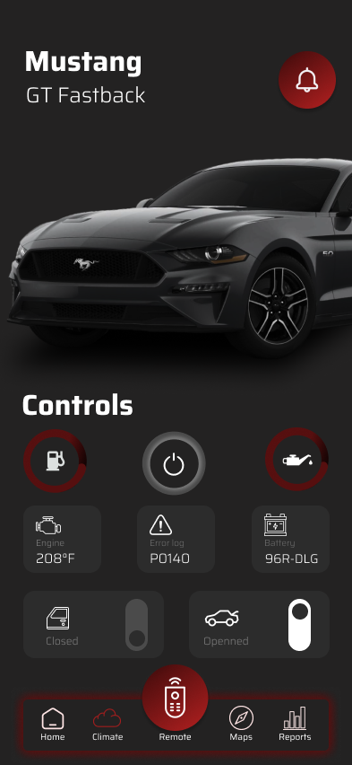
Рассмотреть +
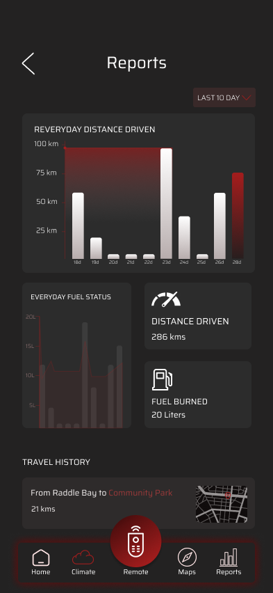
Рассмотреть +
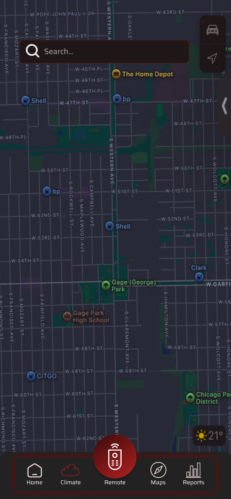
Рассмотреть +
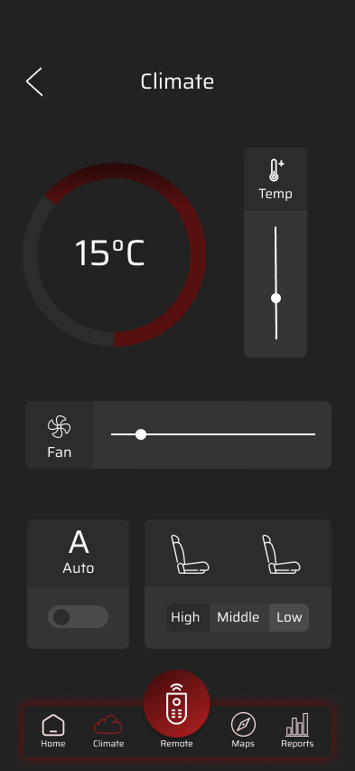
Рассмотреть +Буклет
Пищевые добавки
Две стороны информационного буклета о пищевых добавках. Композиция с фотографиями, зелёным акцентом и тематическими текстовыми блоками.

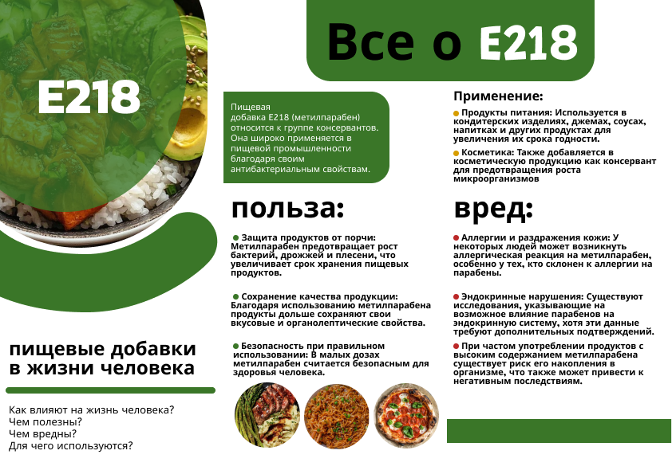
Рассмотреть +
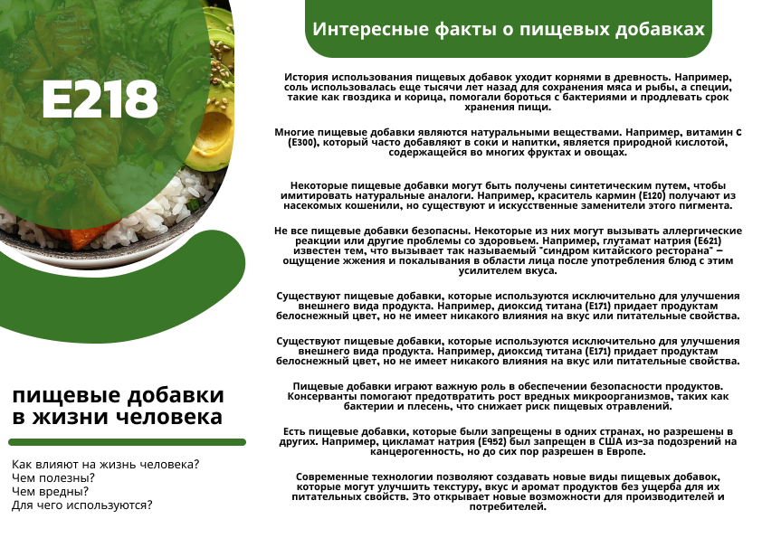
Рассмотреть +СЛЕДУЮЩИЙ ПРОЕКТ — ВАШ?
Давайте создадим
что-то ваше.
Расскажите, что хотите сделать.
А я воплощу это в реальность.